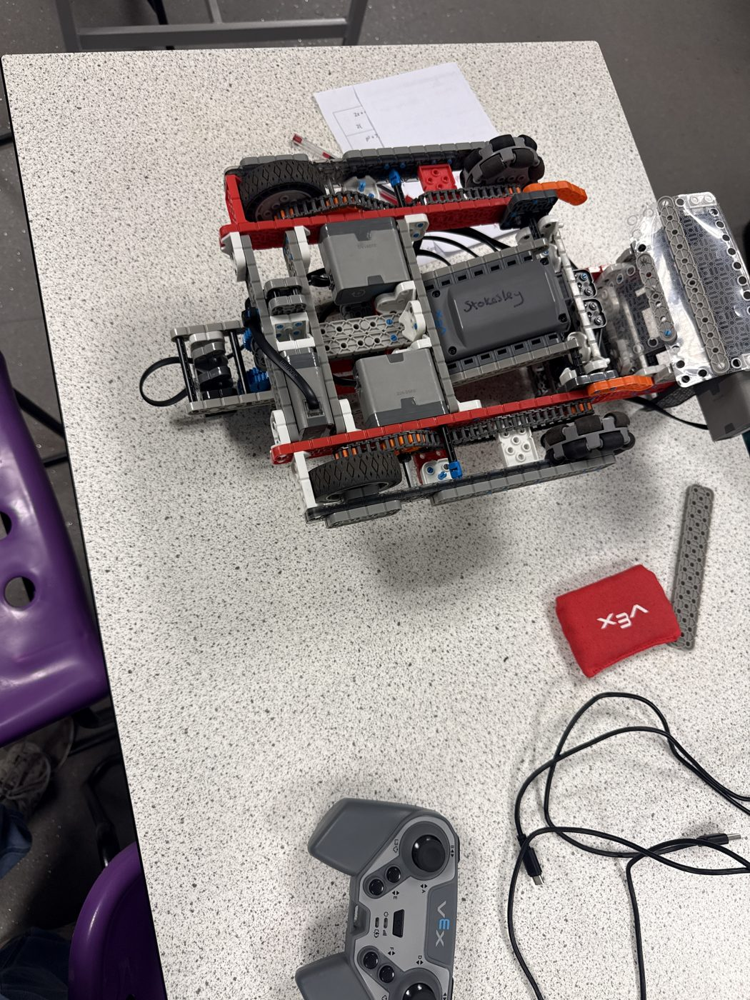

Log 003 · 11 Nov 2026
Helping at Robotics Club
In January I saw a post about the robotics club on Stokesley School's Facebook page, thanking one of my old teachers for funding. I messaged to see if they needed any help, and now I volunteer there every week as a mentor.
The Robot
The club builds with VEX IQ, and we have one team. This season the students built the Flop-Bot. It picks a beanbag up off the ground and lifts it up and over, a bit like a telehandler, then scores it in a tiered, pyramid scoring zone.
The students were given the design for the Flop-Bot, and I helped them build it. Once it was built, I was there to support them if they had ideas for physical or mechanical improvements.

I also help with the coding, which is done in blocks. The students know what they want the robot to do, but they don't always know how to turn that into code that tells the robot what to do. That's the gap I help bridge. I break down what they want to happen, then help them work out which logic blocks they need. I could just sit down and program the robot myself, but I try to explain different ways to approach their problems so next time they might be able to solve them without me.
Challenges
One of the hardest parts is keeping everyone's attention. The moment they struggle to grasp a concept, or the opposite, right after they finish a big milestone, they get off track. Another challenge for me has been explaining what I'm thinking in simpler terms.
I find the students struggle with the engineering process: noticing that something isn't working, then coming up with ideas to fix it. So I'm trying to encourage a bit of free thinking. Rather than handing them the answer, I ask questions that point them in a direction, so they try different approaches themselves.
What's next
There's a competition in January, so right now everyone is working hard to perfect their driving skills and figure out how they want to approach the autonomous part.